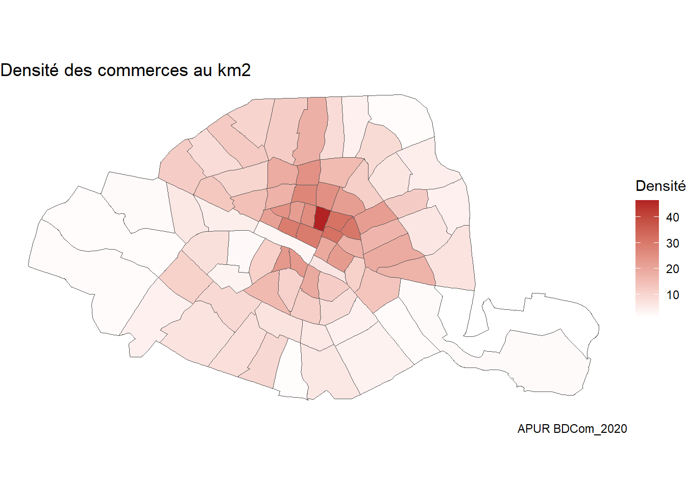

library(tidyverse)
library(sf)
library(ggrepel)Cartographie
Premières cartes
On travaille à partir de la base de données du commerce 2020 (source : APUR) et de la division de Paris en quartiers administratifs (source : Ville de Paris).
On commence par quelques cartes simples :
commerce<-sf::st_read("cartes/BDCOM_2020.shp")Reading layer `BDCOM_2020' from data source
`C:\Users\sopbal\Documents\Boulot\Créteil\Web Data Mining\Carto_Airbnb\cartes\BDCOM_2020.shp'
using driver `ESRI Shapefile'
replacing null geometries with empty geometries
Simple feature collection with 83399 features and 21 fields (with 15 geometries empty)
Geometry type: POINT
Dimension: XY
Bounding box: xmin: 643571 ymin: 6857578 xmax: 660318.4 ymax: 6866978
Projected CRS: RGF93 v1 / Lambert-93ggplot(commerce)+
geom_sf()ggplot()+
geom_sf(data=commerce, aes(color=LIBELLE_RE))paris<-sf::st_read("cartes/quartier_paris.shp")Reading layer `quartier_paris' from data source
`C:\Users\sopbal\Documents\Boulot\Créteil\Web Data Mining\Carto_Airbnb\cartes\quartier_paris.shp'
using driver `ESRI Shapefile'
Simple feature collection with 80 features and 10 fields
Geometry type: POLYGON
Dimension: XY
Bounding box: xmin: 2.224078 ymin: 48.81558 xmax: 2.469761 ymax: 48.90216
Geodetic CRS: WGS 84ggplot(paris)+
geom_sf()
ggplot()+
geom_sf(data=paris, aes(fill=l_qu), show.legend = F)ggplot()+
geom_sf(data=paris)+
geom_sf_text(data=paris,aes(label = l_qu), size=1.5)+
theme_void()On peut également filtrer les données pour plus de précision :
ggplot()+
geom_sf(data = paris)+
geom_sf(data=commerce%>%filter(LIBELLE_RE=="Local vacant"), aes(color=SURFACE), size=0.5)ggplot()+
geom_sf(data=paris%>%filter(c_ar==6), aes(fill=l_qu))+
geom_sf(data=commerce%>%filter(LIBELLE_RE=="Local vacant"&ARRONDISSE==6&QUARTIER==24), aes(color=SURFACE), alpha=0.5)+
scale_fill_brewer(palette = "Pastel1")+
scale_color_brewer(palette="Set1")RColorBrewer::display.brewer.all()
Indicateurs et cartes
Jusqu’à présent, on a représenté les données à notre disposition, en les filtrant. On va maintenant essayer de créer de nouvelles informations, (1) en fusionnant les bases et (2) en créant de nouveaux indicateurs. On s’intéressera ensuite aux représentations graphiques.
Fusionner les bases
On dispose de l’information concernant le quartier administratif dans les deux jeux de données (cf. Wikipédia). Ce sera notre clé de fusion. Cependant, le format de cette information n’est pas la même entre les deux bases, on doit donc les mettre au même format entre les deux bases. Les variables d’intérêt sont “QUARTIER” pour la base commerce et “c_qu” pour la base de Paris.
paris<-paris%>%
mutate(QUARTIER=as.integer(c_qu))
df<-inner_join(as.data.frame(commerce)%>%select(-geometry), as.data.frame(paris)%>%select(-geometry))
nb_com<-df%>%group_by(l_qu)%>%
reframe(nb_commerce=n(),
density_com=nb_commerce/(surface/10000))%>%unique()
nb_type<-df%>%group_by(l_qu, LIBELLE_RE)%>%
reframe(nb_type=n(),
density_type=nb_type/(surface/10000))%>%unique()
nb_surface<-df%>%group_by(l_qu, SURFACE)%>%
reframe(nb_surface=n(),
density_surface=nb_surface/(surface/10000))%>%unique
nb_surface_type<-df%>%group_by(l_qu, LIBELLE_RE, SURFACE)%>%
reframe(nb_surf_type=n(),
density_surf_type=nb_surf_type/(surface/10000))%>%
unique()
Com<-merge(paris,nb_com, by ="l_qu")
Type<-merge(paris, nb_type, by="l_qu" )Cartographies
ggplot(Com) +
geom_sf(aes(fill=density_com))+
scale_fill_gradient(low = "white", high = "firebrick")+
labs(title = "Densité des commerces au km2",
x=NULL,
y=NULL,
caption="APUR BDCom_2020",
fill="Densité")+
theme_void()
ggplot(Type%>%filter(LIBELLE_RE=="Alimentaire")) +
geom_sf(aes(fill=nb_type))+
scale_fill_gradient(low ="lightblue", high = "darkblue")+
labs(title = "Nombre des commerces alimentaire",
x=NULL,
y=NULL,
caption="APUR BDCom_2020",
fill="Nombre")+
theme_void()Conclusion
On peut bien entendu aller plus loin et plus en détails dans l’étude, en croisant avec d’autres sources de données, en travaillant sur les libellés précis des commerces (plus de 220), et en ajoutant des fonds de cartes reprenant les rues, stations de métro, etc.
commerce%>%group_by(LIBELLE_AC)%>%count(sort=T)Simple feature collection with 221 features and 2 fields
Geometry type: MULTIPOINT
Dimension: XY
Bounding box: xmin: 643571 ymin: 6857578 xmax: 660318.4 ymax: 6866978
Projected CRS: RGF93 v1 / Lambert-93
# A tibble: 221 × 3
LIBELLE_AC n geometry
* <chr> <int> <MULTIPOINT [m]>
1 Locaux Vacants 7247 ((645171.8 6860109), (645…
2 Bureau en boutique 6904 ((645217.8 6860179), (645…
3 Brasserie - Restauration continue sans tabac 2739 ((645328 6860566), (64536…
4 Restauration rapide assise 2658 ((645395.3 6860318), (645…
5 Coiffure 2654 ((645475.4 6859947), (645…
6 Prêt-à-porter Femme 2003 ((645560.1 6859974), (645…
7 Restaurant traditionnel français 2003 ((644254.8 6862813), (644…
8 Restaurant asiatique 1978 ((645520.4 6860144), (645…
9 Agence immobilière 1944 ((645342.5 6860547), (645…
10 Locaux en travaux 1517 ((645547.7 6860660), (645…
# ℹ 211 more rows